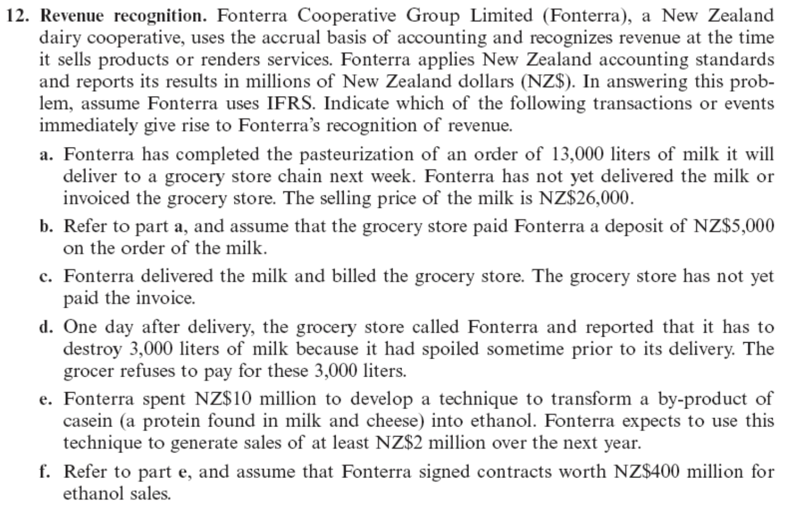
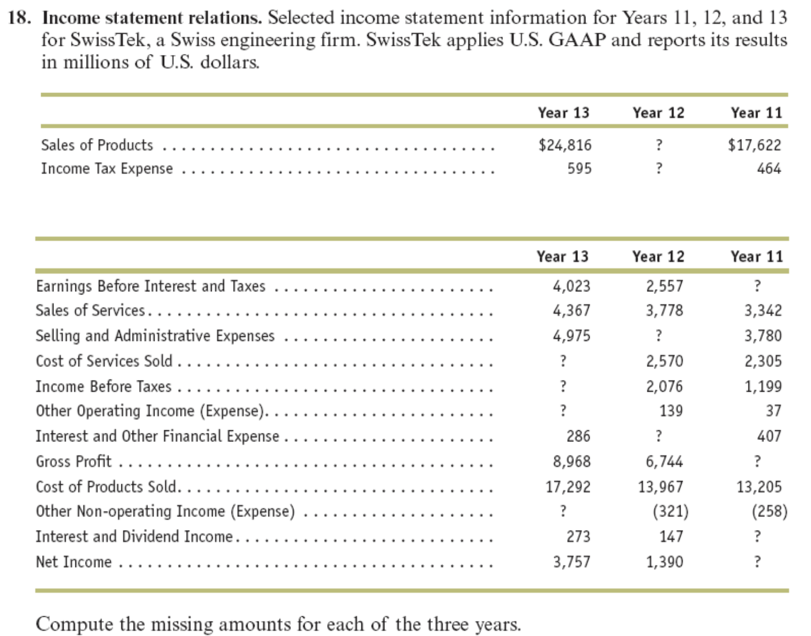

재무회계 Ch5 과제
(1) Question 5-12

- NOT recognized. It is before a completion of the earning process.
- NOT recognized. It is before a completion of the earning process.
- Revenue recoginzed. There is a completion of the earning process and receipt.(account receivable)
- NOT recognized. It can be an expense.
- NOT recognized. It is an investment, which is an expense.
- NOT recognized. There is no completion of the earning process.
(2) Question 5-18

The following table is the re-organized income statement.
| Category | Year 13 | Year 12 | Year 11 |
|---|---|---|---|
| (+) Sales of Products | 24,816 | 19,503 | 17,622 |
| (-) Cost of Products Sold | 17,292 | 13,967 | 13,205 |
| (+) Sales of Service | 4,367 | 3,778 | 3,342 |
| (-) Cost of Services Sold | 2,923 | 2,570 | 2,305 |
| (=) Gross Profit | 8,968 | 6,744 | 5,454 |
| (-) Selling and Administrative Expenses | 4,975 | 4,326 | 3,780 |
| (+) Other Operating Income | (30) | 139 | 37 |
| (=) Earning Before Interest and Taxes | 4,023 | 2,557 | 1,711 |
| (+) Other Non-operating Income | 342 | (321) | (258) |
| (+) Interest and Dividend Income | 273 | 147 | 153 |
| (-) Interest and Other Financial Expense | 286 | 307 | 407 |
| (=) Income Before Taxes | 4,352 | 2,076 | 1,199 |
| (-) Income Tax Expense | 595 | 686 | 464 |
| (=) Net Income | 3,757 | 1,390 | 735 |